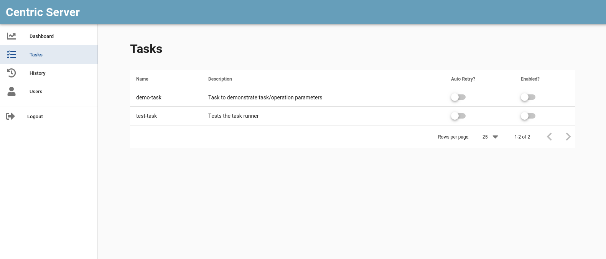
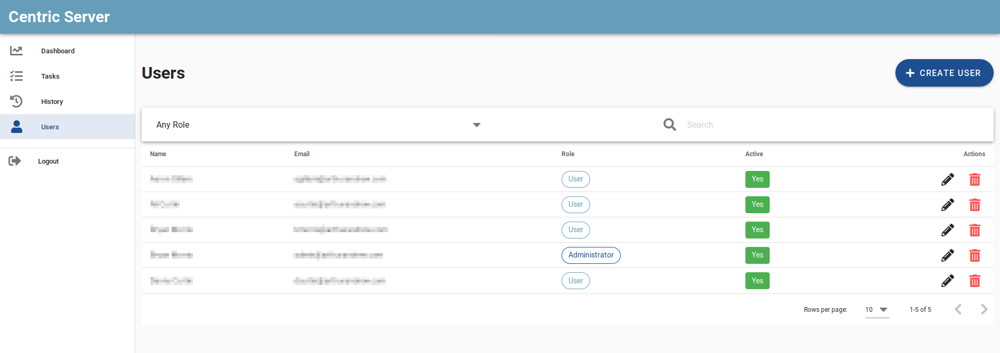
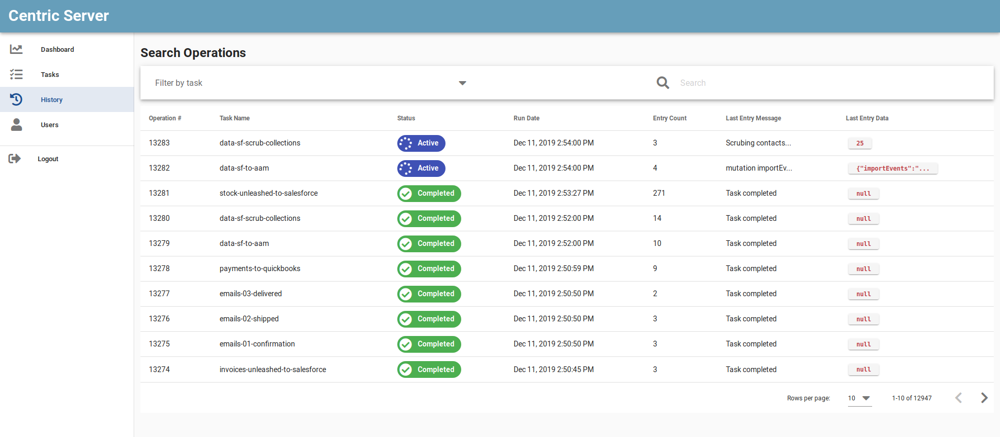
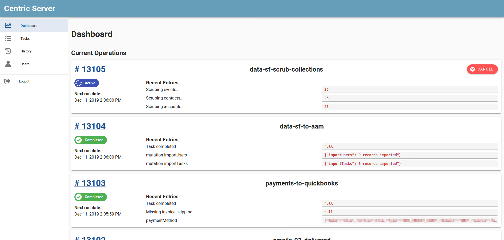

NOTE:
The name of the task in the centric web interface is equivalent to the name of the task file name.
A programmable automation server.
$ npm install -g centric
Centric scaffold will create a basic centric project with examples that you can modify to suit your needs.
$ centric scaffold
Folder Structure for a centric project.
.
├── services # Service Files
├── tasks # Task Files
├── config.js # Configuration file
After adding scaffold files, start the server using the command:
$ centric start
The services folder contains all your projects service files. A service file has the following signature.
module.exports = async function ({ config }) {
// Service Logic goes here...
const testLogging = function () {
console.log('this is a test')
}
return { testLogging }
}
Services are useful for any logic you wish to share between tasks (like a database connection).
The config file contains the configurations details for development as well as production environment.
You can add more configurations detail as per your need and requirement in the config.js file.
The format of the configuration file config.js goes as:
export const environment = {
baseURL: 'base_url',
arango: {
url: 'arangodb_url',
database: 'database_name'
},
services: [
'service_file_name'
],
// other configurations according to your need
}
| keyword | description |
|---|---|
| baseURL | The base url where the centric points for web UI |
| arango | The arango key contains the url and database name for the arangodb used as centric database. |
| services | An array of strings consisting the name of services file which fall inside the services folder and are being used all over the project |
Create a new file in the tasks folder that matches the following signature.
The name of the task in the centric web interface is equivalent to the name of the task file name.
module.exports = {
description: 'task description', // Viewable in the web UI
locks: null,
defaultData: function () {
// Return the default data for the task.
// This will be the default "taskData" in the run method.
return {}
},
run: async function ({ config, services, opData, saveOpData, taskData, saveTaskData, logInfo, logWarning, logError, isCancelled }) {
// Run method is called when the task is executed.
// Logic for the task goes here.
}
}
description: 'task description', // Viewable in the web UIThe value in the description key states the description of the task and is viewable in the web UI in the tasks list.
locks: 'lockName'The locks behaves as a lock over the task.
In case you need to restrict two tasks from running togethar/parallely because of depenedencies between them, you can add same `lockName ` to both.
If same `locks` string is used for more than one task it prevents other tasks having locks same as of running task from executing untill the running task execution is completed.
defaultData: function () {
// Return the default data for the task.
// This will be the default "taskData" in the run method.
return {}
},
The defaultData returns the default provided task data for an individual task unless the task-data is not present.
The run method provides following listed parameters:
run: async function ({ config, services, opData, saveOpData, taskData, saveTaskData, logInfo, logWarning, logError, isCancelled }) {
// Task logic
}
| Argument | Description |
|---|---|
| config | configuration exported from config.js |
| services | object containing all exported values from all service files |
| opData | Current running task's operation-data. |
| saveOpData | Method to be called to save the curremt operation data. |
| taskData | Task data of the current running task. |
| saveTaskData | Method to be called to save the current running task data. |
| logInfo | logInfo is method to log the info entry showing information log of the operation. |
| logWarning | logWarning is method to log the warnings entry showing warnings of the operation. |
| logError | logError is method to log the errors entry showing errors of the operation. |
| isCancelled | Method to check whether the task is active for running or has been cancelled. |
The screen-shot below shows the list of tasks under the tasks folder.
Go to the tasks list page and click over the task item for which need to schedule a task and follow the following steps:
| Field | Description |
|---|---|
| Name | Name of the schedule |
| cronTime | Time interval to determine how often to run the task |
| enabled? | Enable or disable this schedule |
| data | Set the tasks operation data when started with this schedule |
Select Users menu from home page, users list page looks like 
To create new user click over "CREATE USER" button and add the detail of the user to be created.
The task processed are listed in the history menu under sidemenu list. 
- It provides the list of task operations processed with following details.
- Operation Number.
- Task name of respective operation.
- Status of the operation (i.e) Completed, Terminated, Active, Failed, Cancelled.
- Run date of the operation.
- Entry count: The number of logs written while the processing of the task operation.
- Last entry message and data.
The dashboard page provides the list of currently running task detail. 